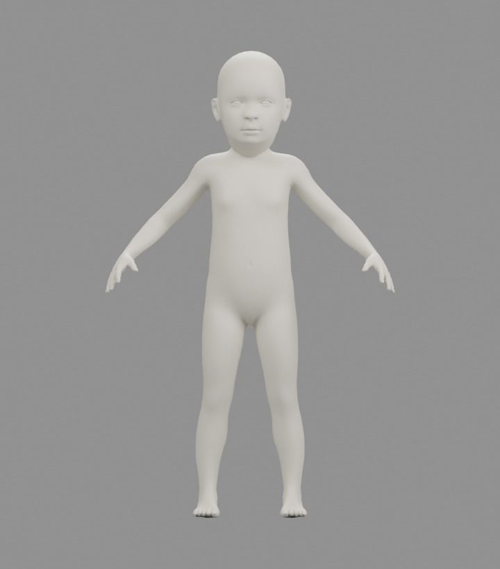
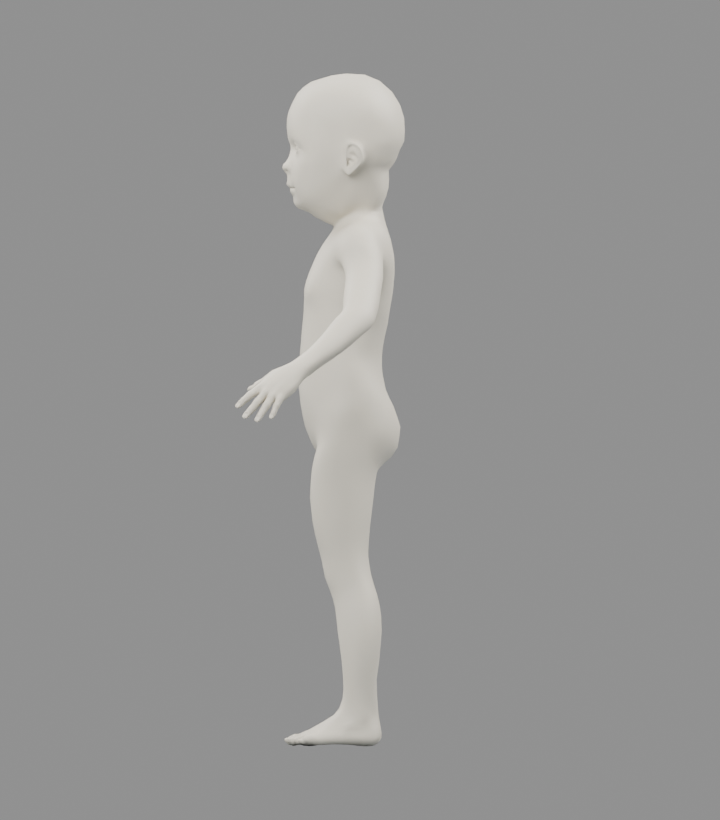
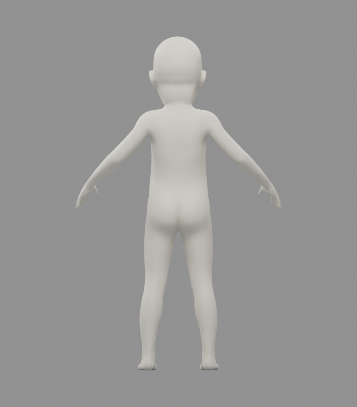

ANNY · 5등신 리그 실험
ANNY 0.6.0 · 측정 비율 5.000 · 104개 본 · 13,718 정점 · 27,420 삼각형
정수리–턱 아래 기준점의 수직 길이로 측정. 표시 높이 1.6m는 검수용 정규화 값입니다.

정면
측면
후면중성 파라미터와 머리 크기 조정을 사용한 연속 표면 후보입니다. 구체관절 외피는 적용하지 않았습니다. 어린 체형에 가까운 실루엣, 눈 표현과 어깨·팔꿈치 굽힘은 추가 디자인 검수 대상입니다. 애니메이션은 수동 가동 검사이며 보행·MoMask 리타게팅이 아닙니다.
검증: 25프레임 유한 좌표 검사, 기준 자세 일치, GLB 재수입 5개 자세 비교 통과. 모든 가동 범위의 충돌이나 게임 엔진 호환성을 보증하는 검사는 아닙니다.